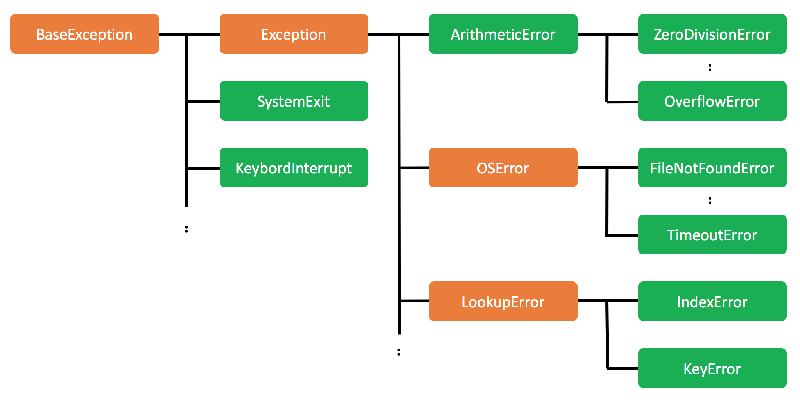

例外クラス
本記事の内容
以前お話したPythonの継承について思い出してください。 継承では、親クラスに大まかな実装を行い、子クラスにより詳細な実装をするのでした。 たとえば親クラスが「車クラス」だとすると、子クラスは「乗用車クラス」「トラッククラス」「スポーツカークラス」といったかたちで差分を実装します。 この継承は例外処理にも関わってきます。先ほど深い説明なしにexceptを以下のように使いました。
except Exception: print('4: inside of except(catch) scope')
exceptの後にあるExceptionは例外処理のためのクラスです。 実はこのException を継承したクラスはさまざまあり、 たとえばIO(入出力)のエラーを扱うためのOSError (Python2 では IOError)や、 リストの範囲外にアクセスした場合に発生する IndexErrorなどとなります。 これはちょうどExceptionが先ほどの説明の車クラスにあたり、OSErrorが乗用車クラス、 IndexErrorがトラッククラスにあたります。
このエラークラスとその使い方について覚えておいてもらいたいことは3つあります。 ひとつめは「発生したエラーの種類に応じて呼び出されるエラーのクラスが異なる」ということです。 たとえば、上記のIOError は当然ながらIO系の処理が失敗した際に利用されますが、 まったく関係ないエラーである0による除算では利用されません。
ふたつめは「exceptに親クラスを指定した場合は子クラスのエラーも対応できる」ということです。 たとえばOSErrorの例外は親クラスであるExceptionでも対応可能です。 これは先程のサンプルの 「except Exception as e 」の e にException クラスではなく、 ZeroDivisionError のクラスのインスタンスが入っていたことでも分かります。 そして、最後は「エラーをキャッチするexceptは複数書くことができる」という点です。 複数書いた場合は先頭から順にチェックしていき、最初にマッチした処理が実行されます。 どのexceptもマッチしなければ例外処理が実行できずにエラーでプログラムそのものが停止してしまいます。 これは後ほど実例を示します。
さっそくコードを書きながら確かめてみましょう。 まず、以下のコードがあります。exceptが2つあり、それぞれOSErrorとExceptionと記載されています。 2つだけでなく、好きなだけexceptを書くことができます。
try: f = open('helloworld.txt', 'r') except OSError: print('os error') except Exception: print('exception')
今回は存在しないファイルhelloworld.txtを読み込もうとしてエラーを発生させます。 これはOSErrorが発生します。さっそく実行してみます。
$ python3 test.py os error
表示された'os error'を見てわかるように、1番目のexceptが呼び出されています。 'exception'という表示がないことから、2番目のexceptは呼び出されていないことがわかります。 これは「最初にマッチした処理が実行」されるという仕組みがあるからです。
次に発生させるエラーを0除算に変えてみます。
try: 5 / 0 except OSError: print('os error') except Exception: print('exception')
これを実行すると以下のようになります。
# python3 test.py exception
先ほどと異なり、2番目のexceptが呼び出されています。 これは1番目のexceptが、発生したエラーにマッチしておらず、無視されたためです。 今回はOSErrorが1番目に指定されていますが、5/0で発生したエラーはOSErrorではなくZeroDivisionErrorなので、マッチしません。 ただ、2番目のExceptionはZeroDivisionErrorの親クラスなのでマッチし、2番目のexceptが呼び出されています。
エラークラスの親子関係は継承でお話した特殊属性の
__base__
を使うことで簡単に調べることができます。
>>> 5/0 Traceback (most recent call last): File "<stdin>", line 1, in <module> ZeroDivisionError: division by zero # ZeroDivisionError の親は ArithmeticError >>> ZeroDivisionError.__base__ <class 'ArithmeticError'> # ArithmeticError の親は Exception >>> ZeroDivisionError.__base__.__base__ <class 'Exception'>
上記のようにZeroDivisionError が Exception の子クラスであることがわかります。 また、先ほど言ったように、どのexceptの例外クラスもマッチしないとエラーになります。 試しに2番目のexceptを削ってみます。
try: 5 / 0 except IOError: print('io error') print(1)
これを実行すると以下のようになります。
$ python3 test.py Traceback (most recent call last): File "test.py", line 2, in <module> 5 / 0 ZeroDivisionError: division by zero
最後の'print(1)'に対応する出力がないことから、グローバルレベルでプログラムの処理が打ち切られていることがわかります。 発生するエラーの種類によってさまざまな例外処理を切り替える必要がある場合は、 このように複数のexceptを使って例外処理を実装すると簡単です。
なお、先ほど言ったように前のexceptにマッチしたら、後のexceptはチェックされません。 そのため、以下のコードで2番目のexcept IOErrorが呼び出されることは絶対にありません。
except Exception: print('exception') except IOError: print('io error')
前のexceptになんにでもマッチするものを書いてしまうと、例外はすべてそこで処理されてしまいます。 つまり、前のexceptほどキャッチできる対象が小さい子クラスの例外クラスを書き、 後半ほど大きな範囲をカバーできる親クラスの例外クラスを書く必要があるということです。
Python のプログラムは簡潔であるべき場合が多いため、 このような複数の except を書くテクニックは必ず必要という場面でなければ使う必要はありません。 ただ、例外処理で対応すべきでない「バグ」を例外で拾ってしまって埋もれることを防ぐ必要があるため、 全てを Exception や BaseException(一番広範囲の例外) で拾うのではなく、 適切な例外クラスを指定するようにしてください。 例外はバグに対応するためにあるものではありません。
カスタム例外クラスの作成
今までは既存の例外クラスのみを利用していましたが、自分で例外クラスを作りそれを使うことも可能です。
自分で作った例外クラスはraiseとともに使うのですが、 既存の例外クラスよりも「自分がわざと発生させた例外」を扱うには行儀がいいです。 なぜなら既存の例外クラスは本来の利用用途があり、それは自分が意図的に発生させた例外とは目的が異なるからです。
さっそく例外クラスを作って、使ってみます。
class MyError(Exception): def __init__(self, value): self.value = value def __str__(self): return repr(self.value) try: raise MyError('my error happens') except MyError as e: print(type(e)) print(e)
Exceptionクラスを継承してMyErrorクラスを作っています。 名前は基本的には「なんとかError」とするのが通例です。 継承の詳細は割愛しますが、正直なところ名前以外のコードは完全にコピペするか、 もしくはコンストラクタの引数あたりを少しいじる程度になると思います。
そして raise で発生されたこのクラスの例外はexceptで同じ例外クラス(もしくは親クラス)を指定してエラーをキャッチしています。 エラーの名前が適切であれば、かなり行儀がいいコードだと思います。
これを実行すると以下のような出力が得られます。
<class '__main__.MyError'> 'my error happens'
基本的には既存の例外クラスとほぼ同じ使い方です。自分で例外クラスを作る場合でも、 あまり複雑な実装をせずに名前だけで区別するのが通例のようです。 ただ、どの例外クラスを継承して自分の例外クラスを作るかには気を配る必要があります。 例えば計算エラー関係の例外クラスを自分で作るのであれば、それを IOError から作るのは間違った判断です。 難しいことを考えたくないのであれば、とりあえず Exception を継承することにしてください。
例外クラスの体系
例外クラスは
BaseException
を起源として様々なものが存在しています。
数が多いので全てを覚える必要はないのですが、おおまかな体系だけは把握することが望ましいです。
以下に Python3 の例外クラスの継承関係の図を示します。
オレンジ色のクラスが覚えておいて頂きたい例外クラスです。

図を見ていただくと分かりますが BaseException から派生した例外クラスは Exception 以外にもいくつかあります。 ただ、それらの名前は Error で終わっていないことがわかります。 これらの例外は基本的に例外処理の対象とはしません。 例外処理のメインとなるのは Exception クラスの子クラスとなり、 一部の例外はあるもののそれらには共通して「なんとかError」という名前がついています。 例外処理をする際は、このクラスの継承関係を意識しながら「処理したい例外もしくはその親クラス」で例外を処理するようにしてください。
実は例外クラスを省略して try/catch を使うことができます。 ただ、その場合は暗黙的に BaseException を対象として例外処理がされるため、 可能な限り利用は避けて下さい。 例えば以下のコードですとpython のプログラムを終了する exit 関数ですら例外として処理されてしまいます。
try: exit() except: print('error')
自分が意図していない例外処理が働いてしまわないように注意をしてください。
 印刷する
印刷する